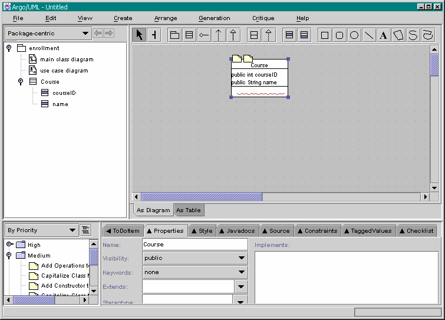

Previous step | Back to ArgoUML Tours | Next step
Notice that the attributes of the Course class you
just created have appeared in the Explorer (top-left).
If needed, you have to "open" the tree by e.g. double-clicking
on the icons. See the figure below.
Next to the Course class on the diagram, add a new class called 'Student'
as is done in Step#4.
Add 2 new attibutes, calling them "newAttr" and "studentID".
Add a new Operation and call it "takeTest". The operation
parameters have to be added by right-clicking in the parameter list on the
operation's property panel. Once you have added the parameter you can call it
"t". You need to set the parameter type to "Test". To do this you have to create
a new class called "Test", then it will be available in the parameter type list
on the parameter property panel.
In the same way, set the return type of the operation to "Grade" (Create a
class Grade first).

Back to ArgoUML Tours
Back to ArgoUML Home